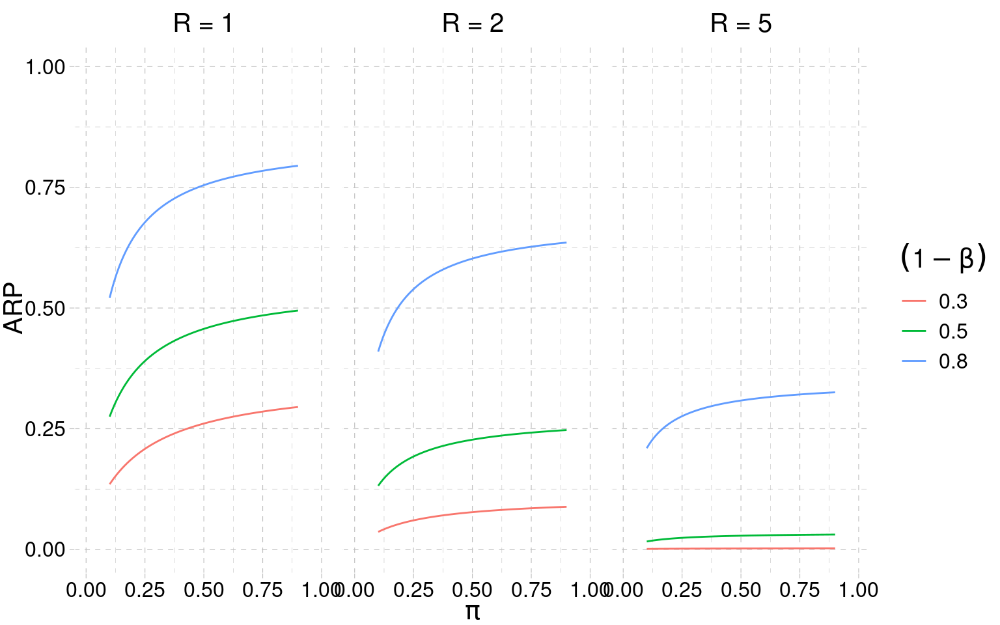

What is the Probability of Replicating a Statistically Significant Effect?
Miller (2009), Psychonomic Bulletin & Review 16:617–640
May 19, 2026
Miller’s two definitions
Aggregate Replication Probability (ARP)
Probability that researchers in a field find a significant replication, given a significant original.
A property of the field, summarised by π.
Individual Replication Probability (IRP)
Probability of a significant replication of this specific original study.
A property of one experiment, conditional on its observed effect.
Notation
- Studies indexed by \(r\): \(r=0\) original, \(r=1,\dots,R\) replications.
- True effects: \(\theta_0, \theta_1, \dots, \theta_R\) (scalar). Estimates \(\hat\theta_r\).
- Precise replication: \(\theta_0 = \theta_1 = \dots\). Extension: \(\theta_r\) vary.
- Null hypothesis: \(|\theta| < h_0\), the region of practical equivalence (ROPE).
- \(\pi\) = proportion of non-null effects in the population of studies (= strength of a research area).
- One-to-one design: \(R=1\). One-to-many: \(R>1\).
The two-level generative model
- Studies are drawn from a hypothetical universe.
- A fraction \(\pi\) have non-null effects \(\theta \sim N(\mu_\theta, \tau^2)\).
- A fraction \(1-\pi\) are in the ROPE.
- \(\tau \to 0\) in a precise replication ⇒ same \(\theta\) for original and replication.
Simple null hypothesis — Miller’s case
- Miller uses point null: \(\theta = 0\) exactly with mass \(1-\pi\), continuous component with mass \(\pi\).
- This is the limit \(h_0 \to 0\) of the ROPE.
- Is the historical default in psychology.
- Everything that follows (calculus, ARP, IRP) is in this regime.
Sequence of events (after Miller 2009)
- Each study tests one \(H_0\). Prior: \(\Pr(H_1)=\pi\), \(\Pr(H_0)=1-\pi\).
- Initial experiment — if \(H_0\) false, \(\Pr(\text{reject})=1-\beta\); if \(H_0\) true, \(\Pr(\text{reject})=\alpha\).
- A follow-up replication runs only after a rejection.
- If \(H_0\) false: replication rejects with the same power \(1-\beta\) (precise replication).
- If \(H_0\) true: replication rejects in the same direction with probability \(\alpha/2\) (concordance assumption).
Individual Replication Probability
Condition on original significance \(|t_0|>t_{c_0}\). Replication success = \(|t_1|>t_{c_1}\) and same sign:
\[
p_{\text{rep}} \;\approx\;
\frac{\Pr(H_1)\,(1-\beta_0)(1-\beta_1)\;+\;\bigl(1-\Pr(H_1)\bigr)\,\alpha_0\,\alpha_1/2}
{\Pr(H_1)\,(1-\beta_0)\;+\;\bigl(1-\Pr(H_1)\bigr)\,\alpha_0}
\]
- Numerator: joint probability of both studies being significant and concordant.
- Denominator: probability the original was significant (publication conditions on this).
- The \(\alpha/2\) accounts for half of false positives being in the opposite direction.
IRP and PPV for \(H_1\) after the original
Let \(O\) denote the event “original was significant” (\(|t_0|>t_{c_0}\)).
IRP — probability of significant + concordant replication, given \(O\):
\[
p_{\text{IRP}} \;\approx\;
\frac{\Pr(H_1)(1-\beta_0)(1-\beta_1) + \bigl(1-\Pr(H_1)\bigr)\alpha_0\alpha_1/2}
{\Pr(H_1)(1-\beta_0) + \bigl(1-\Pr(H_1)\bigr)\alpha_0}.
\]
PPV for \(H_1\) — posterior probability the original is a true positive:
\[
\Pr(H_1 \mid O) \;=\;
\frac{\Pr(H_1)\,(1-\beta_0)}{\Pr(H_1)(1-\beta_0) + \Pr(H_0)\,\alpha_0}.
\]
Equivalently, in odds form (prior odds × Bayes factor):
\[
\frac{\Pr(H_1\mid O)}{\Pr(H_0\mid O)} \;=\;
\frac{\Pr(H_1)}{\Pr(H_0)} \cdot \frac{1-\beta_0}{\alpha_0}.
\]
IRP as a posterior-weighted average (PPV for \(H_1\) on the first term, \(1-\text{PPV}\) on the second):
\[
p_{\text{IRP}} \;=\; \Pr(H_1 \mid O)\,(1-\beta_1) \;+\; \Pr(H_0 \mid O)\,(\alpha_1/2).
\]
Same power and significance
Specialise the master formula with:
- \(\alpha_0 = \alpha_1 = \alpha\), \(\beta_0 = \beta_1 = \beta\) (same design replicated),
- \(\Pr(H_1) = \pi\) (random draw from the field),
- simple null.
\[
p_{\text{ARP}} \;\approx\;
\frac{\pi\,(1-\beta)^2 \;+\; (1-\pi)\,\alpha^2/2}
{\pi\,(1-\beta) \;+\; (1-\pi)\,\alpha}.
\]
The contingency-table view
| \(H_0\) false |
True positive \((1-\beta)\) |
False negative \(\beta\) |
\(\pi\) |
| \(H_0\) true |
False positive \(\alpha\) |
True negative \(1-\alpha\) |
\(1-\pi\) |
- Original significant = TP + FP, weighted by π: \(\pi(1-\beta) + (1-\pi)\alpha\) — the denominator.
- Both significant and concordant = TP-then-TP + (half of) FP-then-FP: the numerator.
- ARP is the ratio.
ARP as a function of π, power, and R

What this plot tells us
- For medium-strength fields (\(\pi\) around 0.3–0.5), ARP is low — even with high power.
- Adding required replications (\(R>1\)) hammers ARP down in every condition.
- The contrast with the “p < .05 means we found something” framing is the whole point.
- Ulrich & Miller (2020): π is the dominant lever; explicit QRPs add modestly on top.
Selection and regression to the mean
- Journals publish original studies selected on significance — \(p \le \alpha\) is a filter on the raw evidence.
- For a given true \(\theta\), only sampling realisations with \(|\hat\theta|\) above a threshold survive the filter ⇒ the published \(\hat\theta\) is systematically larger than \(\theta\).
- A direct replication, not selected on significance, draws from the unfiltered sampling distribution and therefore regresses toward \(\theta\) — typically smaller, often non-significant.
- This is the mechanism behind OSC (2015) finding replication effects roughly half the original effect sizes.
- Quantified by the Type-M error (next slide).
Type-M (magnitude) error
Definition (Gelman & Carlin 2014). The Type-M error is the expected exaggeration factor of a statistically significant estimate:
\[
\text{Type-M} \;=\; \frac{\mathbb{E}\!\left[\,|\hat\theta|\;\big|\;p \le \alpha\,\right]}{|\theta|}.
\]
Mechanism. Conditioning on \(|\hat\theta| > c \cdot \text{SE}\) truncates the sampling distribution from below; the mean of the truncated tail can be much larger than \(\theta\) when SE is large relative to \(\theta\) (low power).
Rule of thumb. Type-M \(\approx 1\) when power \(\ge 0.8\), but Type-M \(\gg 1\) as power drops.
Distinct from Type-S (sign) error and from Type-I/Type-II. Concerns magnitude given significance.
Implications
- p < .05 ≠ replicability. Miller (2009) makes this calculable, not just plausible.
- Replication probability depends on field strength (π), power, researcher behaviour, and the inference made on the original — not on the p value alone.
- Plan replications with lower bounds or a predictive distribution, not the point estimate.
- Selection + low power ⇒ inflated original effects ⇒ shrinkage in replication — the mechanism that OSC (2015) later measured directly.
References
- Miller J (2009). What is the probability of replicating a statistically significant effect? Psychonomic Bulletin & Review 16: 617–640.
- Pawel S, Held L (2020). Probabilistic forecasting of replication studies. PLoS ONE 15: e0231416.
- Ulrich R, Miller J (2020). Questionable research practices may have little effect on replicability. eLife 9: e58237.
- Perugini M, Gallucci M, Costantini G (2014). Safeguard power as a protection against imprecise power estimates. Perspect Psychol Sci 9: 319–32.
- Gelman A, Carlin J (2014). Beyond power calculations: assessing Type S and Type M errors. Perspect Psychol Sci 9: 641–51.
- Open Science Collaboration (2015). Estimating the reproducibility of psychological science. Science 349: aac4716.
- Gambarota F, Fitelson B, Parmigiani G (2025). The Three Rs of Trustworthy Science. https://filippogambarota.github.io/replicability-book/